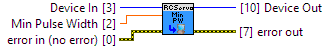

Position,Velocity, and Acceleration are configured by scaling the internal timing (set with MinPulseWidth and MaxPulseWidth) to a user specified range with MinPosition and MaxPosition.
|
|
Device In Device # Identification |

|
|
error in (no error) error in can accept error information wired from VIs previously called. |

|
|
status status is TRUE (X) if an error occurred or FALSE (checkmark) to indicate a warning or that no error occurred. Right-click the error in control on the front panel and select Explain Error or Explain Warning from the shortcut menu for more information about the error. |

|
|
code code is the error or warning code. Right-click the error in control on the front panel and select Explain Error or Explain Warning from the shortcut menu for more information about the error. |

|
|
source source describes the origin of the error or warning. Right-click the error in control on the front panel and select Explain Error or Explain Warning from the shortcut menu for more information about the error. |

|
|
Min Pulse Width The pulse width value Units: microseconds (μs)
1000_0 (ver: 200, 201) RC Servo Motor Controller: Def: 550
1000_0 (ver: 300, 312) RC Servo Motor Controller: Def: 550
1000_0 (ver: 313) RC Servo Motor Controller: Def: 550
1001_0 (ver: 200, 201) RC Servo Motor Controller: Def: 550
1001_0 (ver: 300, 302, 312) RC Servo Motor Controller: Def: 550
1001_0 (ver: 313) RC Servo Motor Controller: Def: 550 1001_0 (ver: 313, 400) RC Servo Motor Controller: Def: 550
1061_0 (ver: 100) RC Servo Motor Controller: Def: 550
1061_0 (ver: 200) RC Servo Motor Controller: Def: 550
1061_1 (ver: 300, 301, 302, 303, 304) RC Servo Motor Controller: Def: 550
RCC0004_0 (ver: 400) RC Servo Motor Controller: Def: 550
1066_0 (ver: 100) RC Servo Motor Controller: Def: 550 1066_1 (ver: 100, 101) RC Servo Motor Controller: Def: 550
RCC1000_0 (ver: 106) RC Servo Motor Controller: Val: 550 |

|
Device Out Same as Device In |
|
|
error out error out passes error or warning information out of a VI to be used by other VIs. |

|
|
status status is TRUE (X) if an error occurred or FALSE (checkmark) to indicate a warning or that no error occurred. Right-click the error out control on the front panel and select Explain Error or Explain Warning from the shortcut menu for more information about the error. |

|
|
code code is the error or warning code. Right-click the error out control on the front panel and select Explain Error or Explain Warning from the shortcut menu for more information about the error. |

|
|
source source describes the origin of the error or warning. Right-click the error out control on the front panel and select Explain Error or Explain Warning from the shortcut menu for more information about the error. |